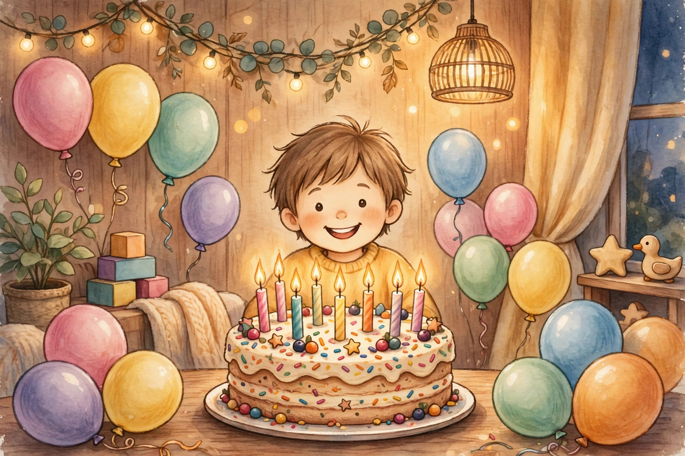

Baby First Month Girl Prompts: 10 Sweet Ideas for 2026


One month old and already changing every day. That is why parents want this photo to be right, and why I kept these prompts simple and soft.
All you need is one clear photo of her, in gentle light. The prompt adds a dress, a basket of flowers or a small bunny, and leaves her face exactly as it is.
Nothing here is loud or fussy. The colours stay pale, the backgrounds stay plain, and your baby stays the only thing that matters in the frame.
Make one for the wall, one for the grandparents, and one to look back on in a year. They are free, so try a few and keep the best.
Before you start
Before you copy a prompt, get the starting photo right. These five points will help.
- Choose a photo with her face in focus and fully in view. A sleeping photo is fine.
- Use soft window light. Direct sun can make a baby's skin look red or washed out.
- Start with a plain background, such as a white blanket or a pale sheet.
- Copy the prompt as it is the first time, then change one thing at a time.
- Only use a photo you have permission to use, and ask a parent or guardian first if it is not your child.
Table of contents
- Prompt 1: Sleeping on a soft blanket
- Prompt 2: In a soft dress, close up
- Prompt 3: With a small toy bunny
- Prompt 4: In a basket with flowers
- Prompt 5: Held by a parent
- Prompt 6: Yawning in morning light
- Prompt 7: With a number one sign
- Prompt 8: In a soft headband, smiling
- Prompt 9: Hands close up, soft light
- Prompt 10: On a rug with soft toys
- How to use these prompts
- Tips to get a better result
- Common mistakes to avoid
- Frequently asked questions
10 copy and paste prompts
Find the scene that suits your photo and copy the prompt below it.
1. Sleeping on a soft blanket
Create a realistic, natural photo from my uploaded photo. Keep the face exactly the same as in the uploaded photo, with the same eyes, smile, hair and skin tone. Do not change the person into someone else, and do not make the skin look smooth or plastic. Show your baby girl sleeping on a soft pink blanket, with calm light and a plain background. Keep the pose relaxed and natural, with a real expression, not a stiff studio pose. Use soft, natural light that suits the scene, with clear detail in the face, hair and clothes. Keep the background simple so the person stays the main focus. Shoot it in a vertical 3 to 4 frame, as if taken on a 35mm lens with a shallow depth of field. The final photo should look like a real photo taken on a good day, with true colours, gentle shadows and a calm, honest feel. It should work well for a profile photo, a print, or a post with family and friends.
A sleeping baby in a soft blanket is the calmest picture you can make. The plain light keeps her face clear and the whole photo feels quiet.
2. In a soft dress, close up
Create a realistic, natural photo from my uploaded photo. Keep the face exactly the same as in the uploaded photo, with the same eyes, smile, hair and skin tone. Do not change the person into someone else, and do not make the skin look smooth or plastic. Show your baby girl in a soft dress, in a close up photo, with soft window light. Keep the pose relaxed and natural, with a real expression, not a stiff studio pose. Use soft, natural light that suits the scene, with clear detail in the face, hair and clothes. Keep the background simple so the person stays the main focus. Shoot it in a vertical 3 to 4 frame, as if taken on a 50mm lens with a shallow depth of field. The final photo should look like a real photo taken on a good day, with true colours, gentle shadows and a calm, honest feel. It should work well for a profile photo, a print, or a post with family and friends.
The close crop shows her face and the soft dress together, which suits a first month keepsake. The pale colours keep the picture gentle.
3. With a small toy bunny
Create a realistic, natural photo from my uploaded photo. Keep the face exactly the same as in the uploaded photo, with the same eyes, smile, hair and skin tone. Do not change the person into someone else, and do not make the skin look smooth or plastic. Show your baby girl lying with a small soft toy bunny, smiling, with a plain light background. Keep the pose relaxed and natural, with a real expression, not a stiff studio pose. Use soft, natural light that suits the scene, with clear detail in the face, hair and clothes. Keep the background simple so the person stays the main focus. Shoot it in a vertical 3 to 4 frame, as if taken on a 85mm portrait lens with a shallow depth of field. The final photo should look like a real photo taken on a good day, with true colours, gentle shadows and a calm, honest feel. It should work well for a profile photo, a print, or a post with family and friends.
The little bunny sits beside her and shows how small she is. It adds charm without covering her face or hands.
4. In a basket with flowers
Create a realistic, natural photo from my uploaded photo. Keep the face exactly the same as in the uploaded photo, with the same eyes, smile, hair and skin tone. Do not change the person into someone else, and do not make the skin look smooth or plastic. Show your baby girl in a soft basket with small flowers at the side, with calm light. Keep the pose relaxed and natural, with a real expression, not a stiff studio pose. Use soft, natural light that suits the scene, with clear detail in the face, hair and clothes. Keep the background simple so the person stays the main focus. Shoot it in a vertical 3 to 4 frame, as if taken on a 35mm lens with a shallow depth of field. The final photo should look like a real photo taken on a good day, with true colours, gentle shadows and a calm, honest feel. It should work well for a profile photo, a print, or a post with family and friends.
Flowers around the basket soften the edges and add a light touch of colour. The basket keeps her framed and safe looking.
5. Held by a parent
Create a realistic, natural photo from my uploaded photo. Keep the face exactly the same as in the uploaded photo, with the same eyes, smile, hair and skin tone. Do not change the person into someone else, and do not make the skin look smooth or plastic. Show your baby girl held gently by a parent, close to the chest, with warm indoor light. Keep the pose relaxed and natural, with a real expression, not a stiff studio pose. Use soft, natural light that suits the scene, with clear detail in the face, hair and clothes. Keep the background simple so the person stays the main focus. Shoot it in a vertical 3 to 4 frame, as if taken on a 50mm lens with a shallow depth of field. The final photo should look like a real photo taken on a good day, with true colours, gentle shadows and a calm, honest feel. It should work well for a profile photo, a print, or a post with family and friends.
A parent holding her makes the photo feel warm and protected. It also shows her size, which changes so fast at this age.
6. Yawning in morning light
Create a realistic, natural photo from my uploaded photo. Keep the face exactly the same as in the uploaded photo, with the same eyes, smile, hair and skin tone. Do not change the person into someone else, and do not make the skin look smooth or plastic. Show your baby girl yawning in soft morning light, wrapped in a light blanket. Keep the pose relaxed and natural, with a real expression, not a stiff studio pose. Use soft, natural light that suits the scene, with clear detail in the face, hair and clothes. Keep the background simple so the person stays the main focus. Shoot it in a vertical 3 to 4 frame, as if taken on a 85mm portrait lens with a shallow depth of field. The final photo should look like a real photo taken on a good day, with true colours, gentle shadows and a calm, honest feel. It should work well for a profile photo, a print, or a post with family and friends.
A yawn is a real newborn moment, and morning light is soft enough to keep her skin looking true.
7. With a number one sign
Create a realistic, natural photo from my uploaded photo. Keep the face exactly the same as in the uploaded photo, with the same eyes, smile, hair and skin tone. Do not change the person into someone else, and do not make the skin look smooth or plastic. Show your baby girl lying on a blanket with a small number one card, with soft light. Keep the pose relaxed and natural, with a real expression, not a stiff studio pose. Use soft, natural light that suits the scene, with clear detail in the face, hair and clothes. Keep the background simple so the person stays the main focus. Shoot it in a vertical 3 to 4 frame, as if taken on a 35mm lens with a shallow depth of field. The final photo should look like a real photo taken on a good day, with true colours, gentle shadows and a calm, honest feel. It should work well for a profile photo, a print, or a post with family and friends.
The number one tells you the month at a glance, with no fuss. It turns a pretty picture into a dated keepsake.
8. In a soft headband, smiling
Create a realistic, natural photo from my uploaded photo. Keep the face exactly the same as in the uploaded photo, with the same eyes, smile, hair and skin tone. Do not change the person into someone else, and do not make the skin look smooth or plastic. Show your baby girl in a soft headband, smiling, with a plain warm background. Keep the pose relaxed and natural, with a real expression, not a stiff studio pose. Use soft, natural light that suits the scene, with clear detail in the face, hair and clothes. Keep the background simple so the person stays the main focus. Shoot it in a vertical 3 to 4 frame, as if taken on a 50mm lens with a shallow depth of field. The final photo should look like a real photo taken on a good day, with true colours, gentle shadows and a calm, honest feel. It should work well for a profile photo, a print, or a post with family and friends.
A soft headband adds a small detail without hiding her face. A smile, even a tiny one, makes the picture feel alive.
9. Hands close up, soft light
Create a realistic, natural photo from my uploaded photo. Keep the face exactly the same as in the uploaded photo, with the same eyes, smile, hair and skin tone. Do not change the person into someone else, and do not make the skin look smooth or plastic. Show your baby girl in a close up of tiny hands, wrapped in a soft blanket, with calm light. Keep the pose relaxed and natural, with a real expression, not a stiff studio pose. Use soft, natural light that suits the scene, with clear detail in the face, hair and clothes. Keep the background simple so the person stays the main focus. Shoot it in a vertical 3 to 4 frame, as if taken on a 85mm portrait lens with a shallow depth of field. The final photo should look like a real photo taken on a good day, with true colours, gentle shadows and a calm, honest feel. It should work well for a profile photo, a print, or a post with family and friends.
Tiny hands are the detail parents miss most when they grow. A close crop in soft light keeps them sharp and sweet.
10. On a rug with soft toys
Create a realistic, natural photo from my uploaded photo. Keep the face exactly the same as in the uploaded photo, with the same eyes, smile, hair and skin tone. Do not change the person into someone else, and do not make the skin look smooth or plastic. Show your baby girl on a soft rug with a few soft toys around, with warm indoor light. Keep the pose relaxed and natural, with a real expression, not a stiff studio pose. Use soft, natural light that suits the scene, with clear detail in the face, hair and clothes. Keep the background simple so the person stays the main focus. Shoot it in a vertical 3 to 4 frame, as if taken on a 50mm lens with a shallow depth of field. The final photo should look like a real photo taken on a good day, with true colours, gentle shadows and a calm, honest feel. It should work well for a profile photo, a print, or a post with family and friends.
The rug and the toys make a small soft world for her to lie in. Her face stays clear above them, which is what you will look at first.
How to use these prompts
How to use a prompt in Google Gemini
- Open Gemini on your phone or computer.
- Upload a clear photo of your baby in soft daylight.
- Copy one prompt from this page and paste it under the photo.
- Send it and wait.
- Check the face and the skin before anything else, and save the picture you like.
How to use a prompt in ChatGPT
- Open ChatGPT on your phone or computer.
- Upload your baby's photo in the chat.
- Copy one prompt from this page and paste it with the photo.
- Send it and wait for the result.
- If one thing is off, such as the blanket colour, ask for that one change only.
Try the same prompt in both tools if you have a minute. They often give quite different pictures, and one of them will look more like her.
Tips to get a better result
- Photograph her when she is calm and fed. A settled baby gives you a clearer starting photo.
- Cloudy daylight is your friend. It softens everything without any extra work.
- Leave a little space around her face in the starting photo so the tool has room to work.
- Start with the sleeping prompts if she wriggles a lot. They forgive movement best.
- Check the fingers and the headband in the result. Small details are where errors show up.
- Keep the prompt that worked. The same style will suit her second month photo too.
Common mistakes to avoid
- Do not start with a dark or blurry photo. The tool has to guess the face, and that guess is rarely right.
- Do not use a photo of a child without a parent or guardian saying it is fine.
- Do not rewrite the whole prompt at once. One small change tells you what helped.
- Do not expect the same picture every time. Run it again with the same photo if you need to.
- Do not pile on bright colours or busy props. They take attention away from your baby.
Frequently asked questions
Can I use these prompts for free?
Yes, all 10 prompts are free. Copy one, paste it into Gemini or ChatGPT with your baby's photo, and use the picture for yourself or to share with family.
Which tool works best with these prompts?
Both do a good job, in different ways. Gemini often keeps the reference photo close, and ChatGPT often follows a detailed prompt well. Try both and keep the picture that looks most like her.
Why does the face change in my photo?
Usually the starting photo is the problem. If it is dark, blurry or taken from the side, the tool has to guess the face. Use a clear front photo in soft daylight and leave the prompt as it is on the first try.
Can I change the prompt for my own photo?
Yes. Change the dress, the blanket or the background to match your photo. Keep the line about keeping the face the same, and keep the scene simple.
Can I use the photo I make for a card or a post?
Yes, for your own personal use, like a print, a card or a post on your own social media. Only share a photo of a child with a parent or guardian's permission.
Related guides



See all Family and Baby Prompts guides | Back to the home page
Written by Muhammad Afaq Verified Creator
Muhammad Afaq is a writer and AI prompt creator at Prompt Haven. He writes each prompt, then tests it on Gemini and ChatGPT with real photos, to check that it is clear, simple, and easy to copy and paste.